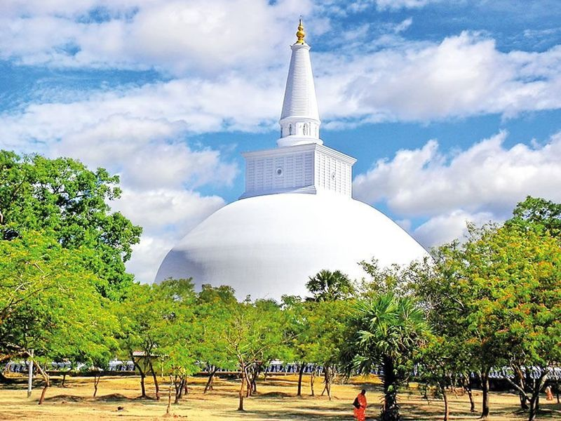
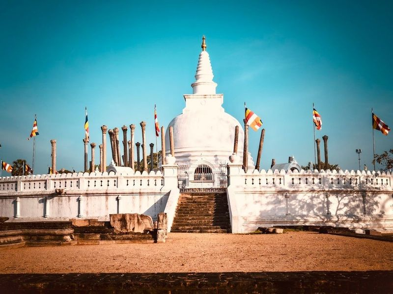
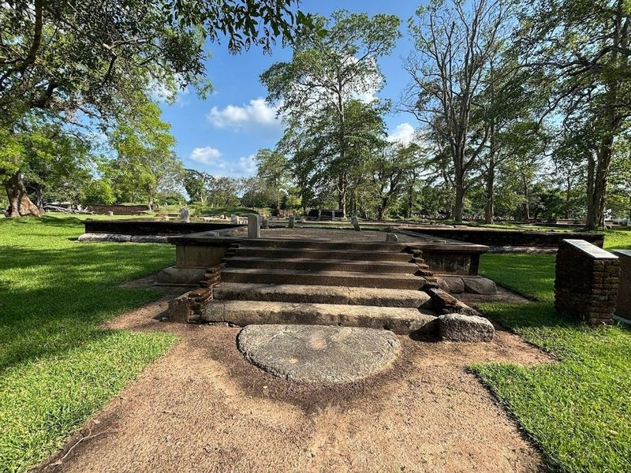
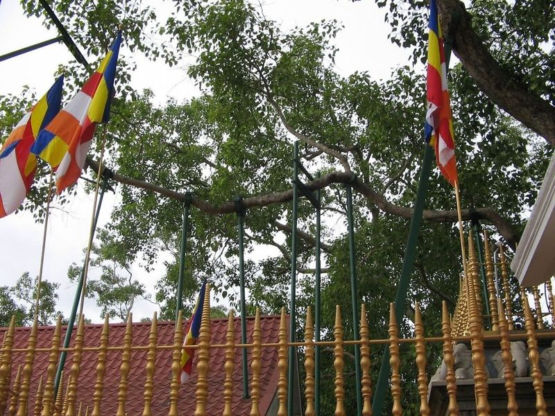
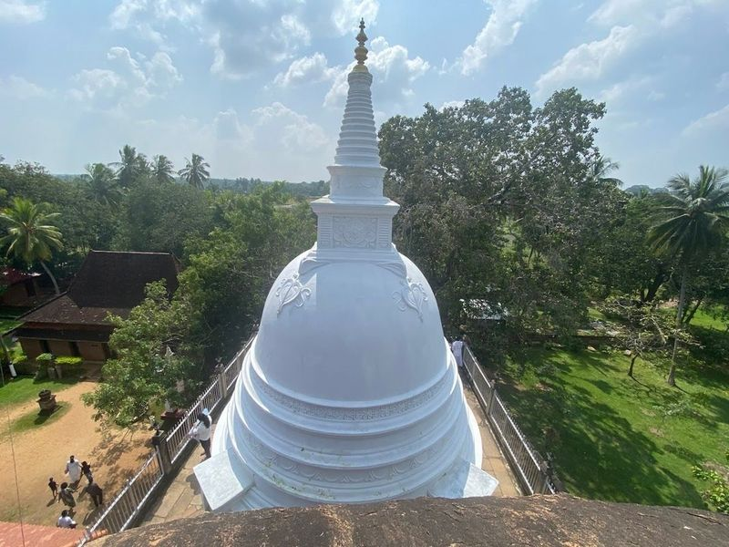
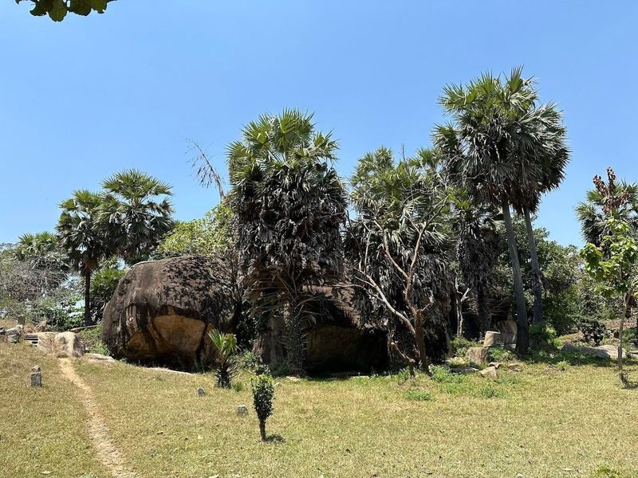
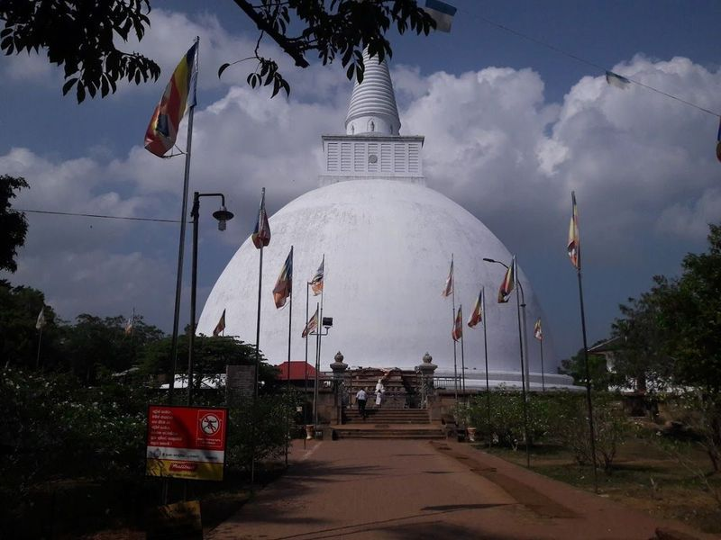
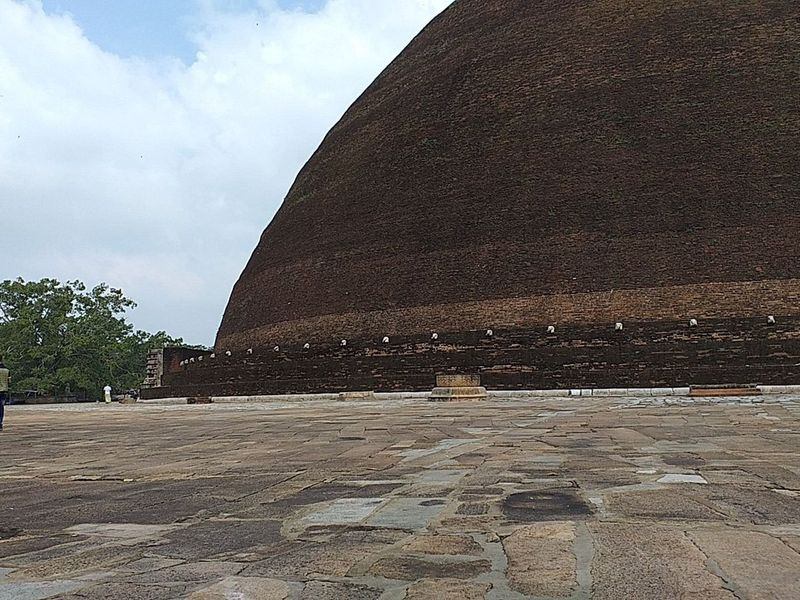
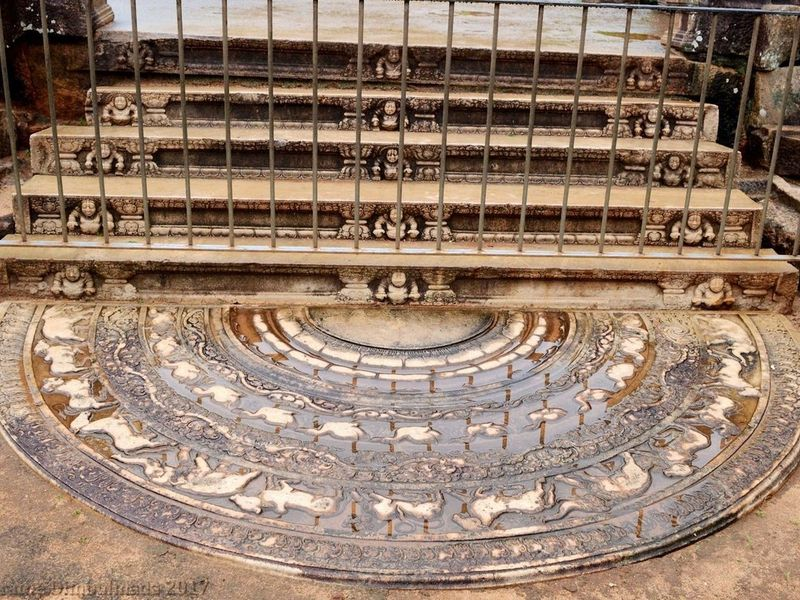
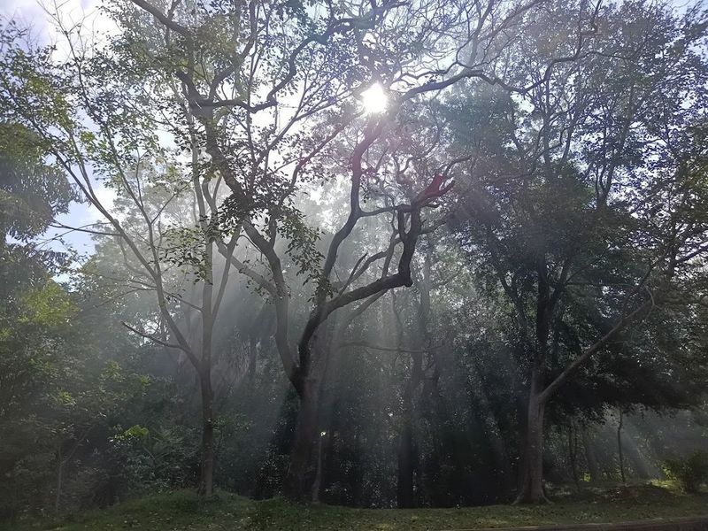

Explore Anuradhapura
A Brief History
Anuradhapura was the first great Sinhalese capital from the fourth century BCE, centred on Buddhist monasteries and irrigation tanks. Dagobas, palace ruins, and sacred bodhi tree plantings record early Theravada statecraft on the island's northern plain. Ruwanwelisaya stupa and ancient tank networks still structure pilgrimage routes across the northern plain.
Attractions Map
Top Sights & Activities

Ruwanweli Maha Seya
Ruwanweli Maha Seya, an ancient stupa dating back to 140 BCE, stands as a testament to Sri Lanka's rich Buddhist heritage. Towering at 103 meters originally, it now reaches a height of 55 meters due to historical damages. This white dagoba is encircled by a wall adorned with a frieze of 344 elephants, most of which are modern replicas.

Thuparamaya
Thuparamaya is the oldest Buddhist temple in Sri Lanka, dating back to the 3rd century BC. It features a restored white stupa and several well-preserved stupas and dagabas, including Ruwanveli Seya, Abayagiriya, Abhayagiri Dagaba, Jetawanaramaya, Mirisaveti Stupa, and Lankarama.

Jethawanaramaya
Jethawanaramaya, located in Anuradhapura, Sri Lanka, is a significant monastery and in the area. It is renowned for its historical and religious significance as it is believed to house a part of Lord Buddha's sash. The monastery features inscriptions in its Salapathala courtyard, adding to its cultural value. Built by King Mahasen around 276-303 A.D.

Jaya Sri Maha Bodhi
Jaya Sri Maha Bodhi is revered pilgrimage sites in Anuradhapura, known as Atamasthana. It is a sacred fig tree that grew from a sapling taken from the original tree in India where Buddha achieved enlightenment. This significant symbol of Sri Lankan culture and spirituality holds great religious importance for Buddhists, making it an destination for pilgrims.

Isurumuniya Temple
Isurumuniya Temple is a Buddhist temple with a rich history dating back thousands of years. It is renowned for its intricate stone carvings, including The Lovers and The Royal Family. This cloistral center, carved out of solid rock, once housed 500 Buddhist monks or children from noble families dedicated to the pursuit of enlightenment. Surrounding bright murals depict the life of Lord Buddha and stories from ancient Anuradhapura.

Ranmasu Uyana (Royal Park)
Ranmasu Uyana, also known as Royal Park, is a must-visit destination in Anuradhapura, Sri Lanka. This ancient pleasure garden boasts intricate ponds and sculptures that echo the leisurely pursuits of royalty. Adjacent to Isurumuni Vihara and Tissa Wewa, this 40-acre park showcases pre-Christian Sri Lankan garden architecture.

Mirisawetiya stupa
Mirisawetiya Vihara, located in Anuradhapura, Sri Lanka, is a significant Buddhist temple with a rich history dating back to the 2nd century BC. The temple is renowned for its grand stupa, the Mirisawetiya Stupa or Mirisavetiya Dagaba, built by King Dutugamunu to honor the relics of Buddha.

Abhayagiriya
Abhayagiriya, a sacred monastery site founded in the 2nd century BC, is renowned for its colossal dagoba which was once over 100m high and served as the ceremonial focus of the 5000-strong Abhayagiri Monastery. Today, after several reconstructions, the Abhayagiri Dagoba stands at 75m tall and is visually . The broader monastic complex spans over 200 hectares and was an important educational institution.

Anuradhapura Moonstone
The Anuradhapura Moonstone is a remarkable ancient artifact located in the Abayagiri Monastery, dating back to the 7th-8th centuries. It is renowned for its exceptional preservation and intricate design, featuring a ring of flames on the outer edge and a circle of elephants, horses, lions, and bulls below. This crescent-shaped stone slab is adorned with beautiful carvings traditionally believed to ward off evil spirits.

Kuttam Pokuna
Kuttam Pokuna, or the Twin Ponds, is a captivating historical site located in the ancient city of Anuradhapura, Sri Lanka. These beautifully preserved bathing tanks are believed to have been part of the renowned Abhayagiri Vihara complex and showcase remarkable architectural ingenuity from as early as the 6th century during King Aggabodhi's reign.